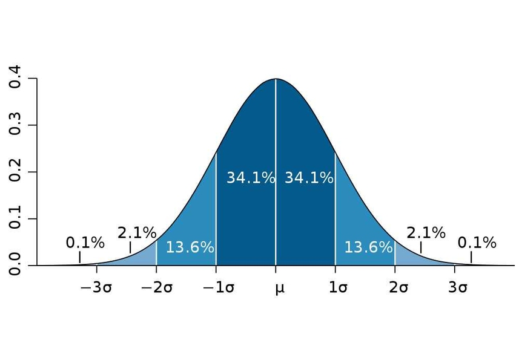

6 Lab 6: The raster calculator and other rastery bits
In this lab, we will continue working with rasters, and will learn how to do several new operations using them, including using the all-powerful Raster Calculator. We will also see the effects of raster resampling in practice.
6.1 Before you start!
- Go through the Week 3 preparatory session on Canvas, and watch the seminar recording if you have missed it. Also make sure you have completed all labs prior to this one.
6.2 Guided Exercise 1 - Global raster statistics
In this exercise, we will use the layers from the previous lab to learn about raster statistics and the raster calculator.
6.2.1 Recovering your data
At the end of last week’s lab you saved the final results of your project as a zipfile. Retrieve this file, extract the contents, and re-open your project. It should have these four layers in it:
- Polygon vector layer of the Island of Great Britain
- Raster layer of the SRTM digital elevation model (reprojected to EPSG:27700 and masked to the GB island)
- Raster file of the CORINE land cover dataset (reprojected to EPSG:27700 and masked to the GB island)
- Raster file of the BIOCLIM climatic dataset (reprojected to EPSG:27700 and masked to the GB island)
(if this doesn’t work, I have a copy of the files here. But you should really try to make it work with your own saved data - storing and retrieving prioject data is a key skill you need to develop!)
6.2.2 Global raster statistics
Winter is coming, and you want to escape the worst of the cold and rain. You therefore decide to use your GIS skills to find the ideal place to spend your winter in the UK - an urban area with lower precipitation and higher minimum temperatures. For convenience, we will restrict oour search to the Island of Great Britain, as we already have data for it ready to go.
To get started, you would like to know what is the overall range of precipitation and temperature values for the entire island, using the BIOCLIM data. If this was a vector dataset, you would use the Statistical Summary Tool - but it is a raster. What would be the equivalent operation?
The tool we need is called
Raster Layer Statistics, but it is not located in theRastermenu. Instead, we need to launch theProcessingpanel ( . This panel contains a lot of additional GIS functions, and we will use it often now.
. This panel contains a lot of additional GIS functions, and we will use it often now.Once you have the
Processingpanel open, you can either search forRaster Layer Statisticsor find it under theRaster analysisheading. Double click on it to launch the tool window. It should look like this:
Looking at the BIOCLIM data description, the two useful pieces of climatic data you need to get statistics for are BIO6 - Minimum Temperature of the Coldest Month, and BIO12 - Annual Precipitation. The BIO variables are ordered in the file, so band 6 is BIO6, and Band 12 is BIO12.
- In the
Raster Layer Statisticswindow, select the BIOCLIM layer asInput Layerandband 06as band number. You can keep the results as a temporaty file.Runit andClosethe window. A new panel will have appeared under theProcessingpanel, calledResults Viewer. It will have an entry calledStatistics. Double click on it and take note of the minimum and maximum BIO6 values (-75 and 33).
Do these values seem too extreme for the UK? What is going on here?
- Now repeat the process to get the Min and Max values for BIO12 (532 and 2311)
What are the units for precipitation?
6.3 Guided Exercise 2 - Per-pixel calculations with the raster calculator
Although it is easy enough to covert the temperature pixel values to Celsius in our heads, it would be useful to have the data in the proper units, especially if we want to map it later. Let us use the Raster Calculator to apply the conversion factor to all pixels.
- Go to the menu
Raster > Raster Calculatorto launch the calculator. It will look like this:
The general idea is similar to the Field Calculator, with a slightly different layout. The top right panel lists all raster bands in the project (so UK_bioclim_BG_GBmasked@19 means band 19 of the BIOCLIM raster). The top right panel lets us pick some options for our raster creation, and the bottom panel lets us type expressions.
We need to divide all BIO6 temperature values by 10. Double click on the BIOCLIM band 6 in the bands list to add it to the expression panel, and then add the division by
10. On my project, the final expression panel reads as"UK_bioclim_BG_GBmasked@6" / 10, but your BIOCLIM layer may not be named the same as mine. Note that the bottom of the expression panel should sayExpression Valid. If it saysExpression Invalid, check your typing (did you use the double quotes?)For
Output Layer, click on the...button and pick a folder to save the new file. Name itUK_bioclim_BG_GBmasked_BIO6_celsius.tif. Leave the rest as default and click inOK.
How many bands has your newly created file?
Every time you enter an expression involving a raster band and a single number in the Raster Calculator you are telling QGIS to apply the same expression to each pixel of that band. In our case, we divided all pixel values by 10.
6.4 Guided Exercise 3 - Boolean (logical) operations with the raster calculator
The Raster Calculator also fulfills the role of the vector Select by expression tool for rasters. The result of any raster logical operation is either 1 (True) or 0 (False), i.e. a binary raster, sometimes called a raster mask.
Let us find the warmer places in Great Britain. Our highest minimum temperature of the coldest month (BIO6) value was 3.3 degrees, not too far from zero. So let us limit our search to any places that don’t go below 0 Celsius.
- Open the
Raster Calculatoragain, and this time use the expression"UK_bioclim_BG_GBmask_BIO6_celsius@1" > 0. Notice we used here the layer that we just converted to degrees Celsius. Save the results in a proper folder with the nameGB_mintemp_gt_0.tif(gt for ‘greater than’) and run the calculation. You should get something like this:
 By default, QGIS will paint pixels with a value of
By default, QGIS will paint pixels with a value of 1 white, and 2 black. So the white areas now show us all regions of Great Britain that on average don’t go below zero in the worst of winter (these are long term climatic averages). Use the Identify Features tool to check if the pixel values are really 0 and 1.
- Now repeat the process for the precipitation layer. Our minimum annual precipitation value was just above 500, so let us limit us to areas under 700mm of precipitation. Save the result as
GB_anprec_lt_700.tif.
6.5 Guided Exercise 4 - Raster reclassification
An alternative to the Raster Calculator that can be handier when you have multiple ranges to recode is the Reclassify by table tool in the Processing panel, also under the Raster Analysis heading. Find the tool and open it, and you will see this:

Let us use this tool to extract the urban areas from the CORINE dataset. looking at the metadata, the two classes od interest are Continuous Urban Fabric (pixel value 111) and Discontinuous Urban Fabric (112) classes, which are the classes were we would expect existing housing to be located.
- On the
Reclassify by tablewindow, pick the CORINE layer as yourRaster layer, andband 1as yourBand Number. Then click on the...button besides the box to open theReclassification table, and fill the table like the figure below. Click to add rows as necessary.

Click on te blue arrow to go back to main tool window, then set the
nodata valueback to-32768, theRange Boundariestomin <= value <= maxand theOutput Data TypetoByte. Save it asGB_urban_areas.tif.Repeat the process above with the expression .
How could you have done the analysis above using the Raster Calculator instead?
6.6 Guided Exercise 5 - raster vs. raster calculations
We now have three raster masks showing us 1) all the GB areas that don’t go below zero Celsius, 2) the areas that have less than 700mm of rain, and 3) the areas that are urban. How can we combine them into a single layer?
The answer to the above question is still the Raster Calculator. We know the pixels we ‘want’ are numbered 1 on each layer, otherwise they are 0. So if we could multiply one layer by the other, i.e. multiply the value of each set of overlapping pixels, we would get a new raster whith values of \(1 \times 1 \times 1 = 1\) when both conditions are met, and a result of \(0\) if any of the the conditions is not met. This is why binary rasters are also called raster masks - when you multiply any other raster by it, it masks (i.e. zeroes out) anything that is not True in the mask.
Doing it using the Raster Calculator is as simple as it sounds:
- Open the
Raster Calculatorand enter the expression"GB_anprec_lt_700@1" * "GB_mintemp_gt_0@1" * GB_urban_areas@1. Then save you layer with nameUKs_winter_havens.tif.
6.7 Guided Exercise 6 - Vectorizing rasters
The final result of your analysis should consist of only a handful of pixels - such is lifev in the UK. And since these are discrete locations, it may occur to you they would be better represented and visualised as vectors. Turns out we can convert raster to vectors and vice versa:
Go to
Raster > Conversion > Polygonize (Raster to Vector).... In the new window, pick your results layer as theInput Layer,Band 1as theBand number, and leave the rest as default (DNhere means digital number, another name for pixel values. Then pick a folder ans save the results asUK_winter_havens_poly.shp(or geopackage if you prefer).You will notice that a very large polygon was also created for the 0 areas of the raster. You can then put the new vector layer in editing mode, use the
Selection Toolto select this polygon, and then hit theDeletekey on your keyboard to get rid of it. Then save the changes and exit edit mode.
Polygonising rasters can be a very computationally-heavy operation if you have large rasters and/or many scattered pixel values (for example, vectorising the original CORINE layer with all classes). And it is virtually useless for continuous rasters such as temperature or elevation (you would end up with one polygon per pixel as there would be no adjacent pixels with the same value).
So if you start an analysis with raster data, try to do as much as you can in the raster domain, before vectorising anything. But if your raster results represent isolated small regions within a large matrix of ‘no data’ or zero values, then vectorising is a good idea.
You now have polygons representing all adjacent areas that were values as ‘1’ in your raster. But many of them are still only one pixel. What if you wanted to have points instead of polygons?
- In the
Processingpanel, you will find a tool calledRaster Pixels to Points, which you can use to generate the points. I’ll leave the detauils to you, but here is a tip: before you use the tool, go theProperties > Transparencyof your raster results layer, and set 0 as anAdditional Nodata Value. OtherwiseRaster Pixels to Pointswill create one point for every pixel, including the pixels with a value of 0. That’s a lot of points.
6.8 Guided Exercise 7 - Mosaicking and Stacking rasters
Raster files are often very large and ‘heavy’, so it is common to distribute them as tiles or scenes, i.e. smaller adjacent pieces that can be merged back together to cover a certain area of interest. For satellite images, it is also common for each image band to be stored as a separate file (unlike regular photos that only have Blue, Red and Geeen bands, satellite images can have several more bands, covering areas of the spectrum we can’t normally see. The Sentinel-2 satellite, for example, has a total of 13 bands:
| Band | Wavelength | Description |
|---|---|---|
| B1 | 443 nm | Ultra Blue (Coastal and Aerosol) |
| B2 | 490 nm | Blue |
| B3 | 560 nm | Green |
| B4 | 665 nm | Red |
| B5 | 705 nm | Visible and Near Infrared (VNIR) |
| B6 | 740 nm | Visible and Near Infrared (VNIR) |
| B7 | 783 nm | Visible and Near Infrared (VNIR) |
| B8 | 842 nm | Visible and Near Infrared (VNIR) |
| B8a | 865 nm | Visible and Near Infrared (VNIR) |
| B9 | 940 nm | Short Wave Infrared (SWIR) |
| B10 | 1375 nm | Short Wave Infrared (SWIR) |
| B11 | 1610 nm | Short Wave Infrared (SWIR) |
| B12 | 2190 nm | Short Wave Infrared (SWIR) |
In this exercise, we will learn how to a) mosaic rasters - ‘glue’ them together side by side to cover a larger area and b) stack rasters - merge the different band files into a single file.
- Download the data for this specific exercise from this link. It contains four aerial photographs covering the University of Stirling campus and the Wallace Monument area. Extract the data and organise it as usual.
These images were originally downloaded from the ‘Aerial’ section of Digimap - if you ever need very detailed imagery of the UK land, check it out!
- Each image is stored within its own folder, named
nsXXXX, whereXXXXis a four digit number. Start a new project and load into QGIS all the.tiffiles in all four folders. There should be six files in total.
What do you think is the meaning of the nsXXXX folder names?
Notice that the airphoto for tile ns8196 has been provided with its three colour bands (RGB) as separate files - simulating what you would expect for satellite files. To be able to see this aerial photo in colour, we must first stack these bands into a single file. The operation is called stack because you could visualise it as physically stacking them one on top of the other.
- Go to
Raster > Miscellaneous > Merge.... You will get a window like this:
(@) For Input Layers, click on the ... button, and a list of all available raster layers in your project will appear. You can drag the layer names to reorder them, and your final selection should the ns8196_R, ns8196_G, and ns8196_B layers, in the order below from top to bottom. This sets the order of the bands inside the file.
(@) Once you have selected the layers, click on the blue arrow to go back to the main window, then set the following parameters: check the box for Place each input file into a separate band (that tells QGIS you want a stack), and the Output Data Type to Byte. Then save the resulting file as ns8196_RGB.tif, in the same folder where you had the three separate band files.
Why do we change Output Data Type to Byte?
- You should now have a properly colored image for tile ns8196. Remove the three original single band layers from the project and then save it.
Everything looks good colour-wise now, bur our airphoto is still actually four separate adjacent photos. That means any processing we may want to do involving the entire area would have to be repeated four times. We can however merge these four tiles in a single airphoto mosaic.
Go back to
Raster > Miscellaneous > Merge.... Yes, it is a bit confusing, QGIS uses the same tool for both stacking and mosaicking.This time, check the four tiled RGB images as your
Input Layers- order doesn’t matter. Then make sure to not check thePlace each input file into a separate bandoption. That will tell QGIS you want a mosaic and not a stack. Set theOutput Data TypetoByteagain, and save it asUoS_RGB_mosaic.tif. You should now have a single airphoto layer covering the entire area. Remove the previous individual layers from the project and save it again.
6.9 Guided Exercise 8 - Raster image stretching
When working with multiband color images in a GIS environment, we can often manipulate the contrast of an image by applying different contrast stretches to each band. Especially when working with satellite images, which tend to look a bit ‘faded’ because of the atmospheric effect, stretching can make our images more vivid and easier to interpret.
- Right-click on the airphoto mosaic layer you created and go to
Properties > Symbology. You will se that the symbology type isMultiband color, which is the correct choice for representing images. Note that each band is associated to a colour channel (R, G, B), but this association can be changed at will. Change theRed bandto band 2, and theGreen bandto band 1, thenApply. Now the vegetation appears red! Change it back to the proper colour order andApplyagain.
This is a useful feature when working with satellite images, which often have bands representing spectral regions that we cannot see, such as Near Infrared or Microwave. We can then freely associate these bands to colour channels and create false colour compositions that highlight different surface features. The example below shows the UoS campus as seen from the Sentinel-2 satellite. Here we place Band 13 - Short Wave Infared (SWIR) in the blue channel, Band 8 - Near-Infrared band (NIR) in the green channel, and Band 11 - SWIR in the red channel. Since water does not reflect IR, the loch appears black. Plants reflect strongly in the NIR region so they appear bright green, and bare ground / concrete reflects mostly in the SWIR, thus appearing purplish (red+blue).
Notice how the
MinandMaxvalues for each band are0and255, meaning we are mapping our screen colours to the entire range of possible values (0-255). But quite often the colours in an image do not cover the entire 8-bit range, so we are ‘wasting’ colour discrimination.Change the
No Enhancementoption toStretch to Min/Max, and then expand theMin/Max Value Settingsheading. Pick theMin/Maxoption, and selectWhole RasterforStatistics ExtentandActual(slower)forAccuracy, then click onApply. You will see that while band 1 and band 3 do use the entire 0-255 range, band 2 uses the 2-255 range only.
To further enhance the contrast of images, we can tell QGIS to ‘cut off’ the extreme values of the range, using different methods.
Change the
Min/Max Value Settingsoption toCumulative Count Cut, and thenApply. Now theMinandMaxcolour values for each band are (13-189, 29-187,and 31-164 respectively), and the image should look more vivid. What QGIS did was remove the values in the lowest 2% (0.2 percentile) and highest 2% (0.98 percentile) of the existing range before calculating Min/Max values, thus stretching this smaller number range to the full colour range of the screen.Progressively increase the lower percentile (i.e. from 2% to 3%) and decrease the upper percentile (i.e. from 98% to 97%) and notice how the contrast gets progressively stronger. If you go too far (i.e. too narrow a range) you will start to see pixel saturation - many of the pixels will be outside the range and thus mapped to fully black or fully white.
A second way to calculate the stretch is to use standard deviations. You may remember from statistics that when you assume a Normal distribution, a distance of \(\pm 1 \sigma\) from the mean will capture about 68% of the data, \(\pm 2 \sigma\) will capture 98%, \(\pm 3 \sigma\) will capture X % and so on:

Change the
Min/Max Value Settingsoption toMean +/- Standard Deviation x, and leave the multiplier at2. Aplly and check the contrast. Then change the multiplier to1andApply, and compare the contrast of using \(\pm 1 \sigma\) vs. \(\pm 2 \sigma\).Set the final image contrast to your linking, and exit the
Propertieswindow. Save your project.
6.9.1 Independent Exercise - Raster resampling
As you have learned, raster data consists of a grid of pixel values (i.e. a matrix). So quite often, when working with rasters, you may need to shift the pixels from one grid to another. One main example is raster reprojection - if you reproject your raster to a different CRS, the new raster grid will be aligned with this new CRS, and won’t match the original perfectly, as in the figure below.
FIGURE mismatched grids.
That is why the raster reprojection tool is called Warp(Reproject) - it is as if you are warping the image during the transformation. Other times you may need to make two different raster datasets match the same extent and pixel size, which would also require warping one of the rasters to match the other.
A key step when doing these transformations is choosing a resampling method, i.e. in which way will the original pixel values be transferred to the new grid. The most common and fast method is called Nearest Neighbour (NN) - if you imagine the old and new grids partially overlapping, NN resampling just looks for the closest old pixel to the new pixel, and transfers the value:
NN is fast because it requires no additional computations, and also has the benefit of not changing the original data values. But if your data has a lot of fine and/or linear elements, it may result in a ‘jagged’ appearance. For that reason, other methods exist that try to interpolate the new pixel values based on a combination of the original ones. Two common methods are the bilinear and bicubic interpolations, which will average the 4 and 16 closest pixels, respectively. That has the benefit of creating smoother resulting rasters:
Let us now practice our raster skills in an independent exercise, while also demonstrating the effect of resampling:
- On your UK SRTM layer, find the location of Stirling and the university campus, and then use the
Raster > Extraction > Clip Raster by Extentfunction to clip it to an area similar to the image below. For reference, I am using aSingleband Pseudolcolorsymbology with the invertedSpectralcolour palette, stretched to the values between 0 and 200m. If you find it hard to find Stirling, use the OpenStreetMap online layer as a reference. Don’t worry about matching my area perfectly, the clip is just to speed up our computations.
Now use
Warp(Reproject)to reproject this dataset back to EPSG:4326, but twice. Do it the first time usingNearest Neighbouras theResampling method to use, and then a seocnd time using theCubic(4x4 kernel)resampling method. Remember to pick the correct layer to reproject (it should be your Stirling-clipped SRTM layer). Hint: If you save it as a temporaty file, it may not recognise the CRS after the warp - you will see a question mark to the right of the layer name. If that happens, just click on the question mark and pick ESPG:4326 as the CRS.Apply a symbology to the original Stirling SRTM that makes it easier for you to see all terrain features. Then use
Copy StyleandPaste Styleto make sure both of the new warped versions have the same symbology.Flick back and forth between the original, NN resampled and cubic resampled rasters - can you see how NN results in more ‘jagged’ edges where you have sharp terrain transitions?
Calculate the global raster statistics for the three layers and assess how much impact NN vs. cubic resampling has had on the new layers, compared to the original.
One instance where we should always use NN resampling is when we have categorical rasters such as the CORINE dataset. In these cases, any sort of resampling that averages multiple pixel values will create ‘fake’ new numbers that don’t represent any class. Let us test it:
Using
Raster > Extract > Clip Raster by Extent, clip a portion of the CORINE dataset that matches the extent of the clipped Stirling SRTM layer. Hint: ask QGIS to use the extents of the SRTM clip for the CORINE clip.Again, reproject this clipped CORINE dataset using both
Nearest NeighborandCubic(4x4 kernel), as you did for the terrain.
8.Now use the Raster Layer Unique Values Report tool from the Processing panel to count the unique pixel values in the original CORINE clip and the two reprojections. What happened when you used the bicubic resampling?